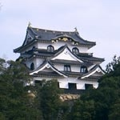
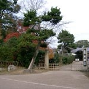
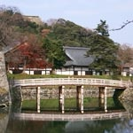
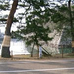
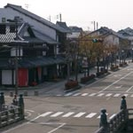

Many people associate Hikone Castle with Ii Naosuke (1815–1860), the 13th lord of Hikone Domain who served as Tairo (Senior Regent) of the Tokugawa shogunate. However, construction of the castle actually began in 1603, initiated by Naosuke's ancestor Naotsugu — the eldest son of the first lord, Naomasa Ii — and took some 20 years to complete. The castle keep underwent a major restoration during the Heisei era and has regained its magnificent appearance. Interestingly, during construction, some structural materials were reportedly repurposed from the former keep of Otsu Castle.

This bridge leads to the main gate (Omote-mon) of Hikone Castle. Completed in March 2004, the freshly constructed bridge, framed by the Hikone Castle Museum in the background, creates a scene so picturesque it looks almost like a scale model. A perfect photo spot at the castle's entrance.

The garden of Genkyu-en is said to have been designed to evoke the famous "Eight Views of Omi." Walking through it, one can easily imagine scenes from classic samurai dramas — the tranquil paths and ponds lending themselves perfectly to the atmosphere of a historical period piece. A peaceful retreat adjacent to the castle grounds.

There are now 33 pine trees in this avenue, but it is said that there were originally 47 — giving rise to the name "Iroha-matsu" (from the 47-character Japanese Iroha poem). Walking from JR Hikone Station toward the castle, these pines are the first thing to greet you. In winter, when snow settles softly on the asphalt path beneath the branches, the scene takes on a quiet, timeless beauty.

A faithfully recreated Edo-period townscape lined with souvenir shops, confectionery stores, and restaurants. Along the lakeside pavement on one side of the street, you will find stone-carved "Hikone Karuta" playing cards themed on Hikone's history. At dusk, the warm glow of the street lamps gives the whole street a wonderfully atmospheric quality.